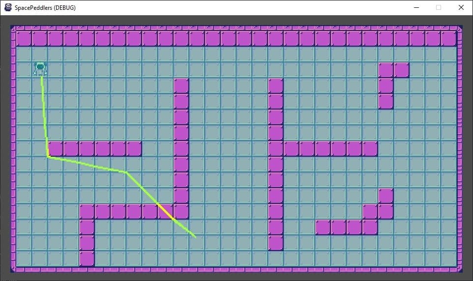
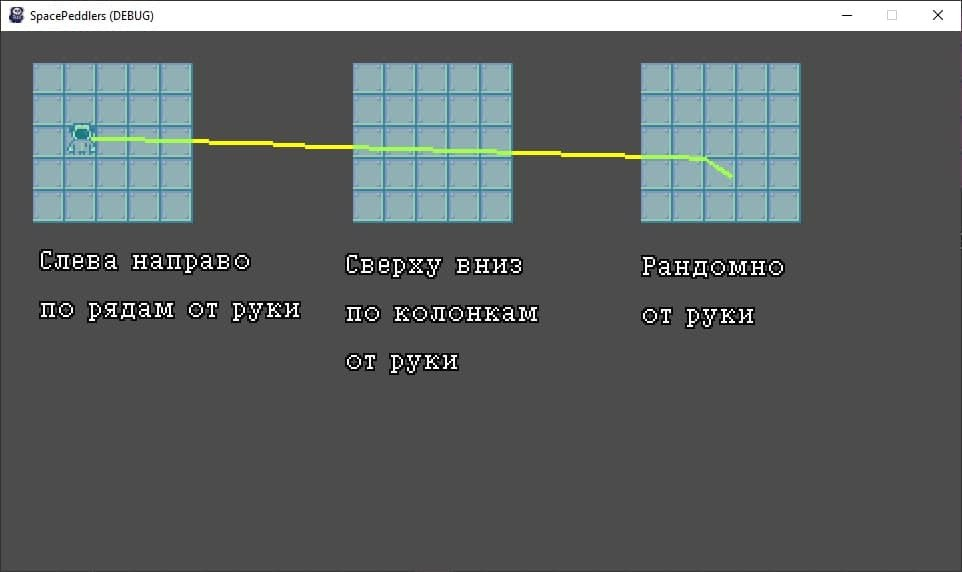

Навигация ботов
Потестил стандартный функционал по навигации в 2d-пространстве, встроенный в движок. Сам функционал достаточно удобный: если пользоваться tilemap-ами движок сам собирает navmesh из настроек тайлов, после просто дергаешь функцию “построй маршрут от и до”, и в ответ приходит вектор точек маршрута. Звучит слишком легко, не правда ли? Что может пойти не так? А может пойти все.
Тестим построение маршрута:
 Голубой - дебажное отображение navmesh
Хоба! Скачок через стену. Что-то совсем идет не так. Тестовую карту я рисовал от руки случайным образом и предположил, что navmesh может разносить в зависимости от порядка зарисовки тайлами.

Хоба 2, эзотерическая! Маршрут скачет не просто сквозь стенки, а соединяет несколько несвязанных navmesh-ей. Пошел курить bugtracker движка и нашел следующий тикет. TLDR в новой версии движка (3.5) обновили дефолты настроек и значение “искать ближайшую точку в navmesh-е при отсутствии прямой связанности на расстоянии X пикселях” стало равным 100. При размере тайла 16х16 и нативном разрешении игры в 420х270 получалось, что можно скакнуть больше чем на пол экрана. Прибил гвоздями настройку в 1 пиксель и все заработало нормально.
Производительность навигации проверять не пришлось - добрый человек сделал бенчмарки. Буду использовать ее, пока не прижмет.
Приключения с генерацией карт
Чтобы использовать навигацию ботов нужна местность. На тестовых картах далеко не уедешь, надо генерить.
Есть много способов рандомной генерации карт:
- Binary Space Partitioning
- Клеточные автоматы
- Wave Collapse Functions
- Tunnelers
- И тд и тп.
Взял на вооружение tunnelers, как наиболее интересные для моего случая - повозиться с игровым ИИ.
Суть такова: есть пустая карта. Пускаем на нее автоматических агентов, которые или строят стены, или, наоборот, прогрызают в ней туннели и комнаты. У агентов есть свой изменяемый стейт, а также они могут плодить другие агенты. А еще этот принцип генерации хорошо интегрируется со сделанными от руки кусками карты.
Нормальных статей про них в интернете полторы штуки: статья от автора рогалика Cogmind, который в свою очередь ссылается на документацию мертвого опенсорс проекта DungeonMaker (последний релиз 2006 года). Библиотека под GPL и ее не заинтегрируешь, поэтому решил просто ее изучить и написать свою либу.
Это оказалось очень правильным решением. Библиотека написана в “лучших” традициях военного и математического кода - однобуквенные переменные, goto, гигантские, почти идентичные между собой, портянки логики, прочая лапша.
Для своего решения принял следующие дизайнерские решения:
- Поддержать тестовые сценарии из DungeonMaker, чтобы можно было наглядно видеть результаты работы и меньше тыкаться.
- Data-driven поведение + плотная интеграция с godot. Не хочу писать свои конфижики, хочу работать через стандартную движковую систему ресурсов.
- Писать сразу на c++, для простоты переиспользования.
- Впоследствии перетащить логику агентов на btree, чтобы ими рулить единообразно и удобно переиспользовать логику.
Первые же проблемы начались при попытке интегрировать конфиг в движок. В godot есть стандартный plain old data-тип Resource дающий автоматическую движковую сериализацию (и учет ссылок) и, от которого, можно наследовать свои типы ресурсов. Чтобы ресурс (или любое другой тип данных) был виден в окошках редактора надо его заэкспортить. Вот только выяснилось, что экспорт работает только для примитивных типов и для встроенных типов ресурсов. Казалось бы финита ля комедия, но нашел следующий пропозал и его реализацию, уже год ждущую заливки в основную ветку. Черрипикнул к себе и казалось бы все заработало. Но увы нет.
export (Resource) var MyResource
export (Array, Resource) var MyResourceArray
В c++ все куда тяжеловеснее
register_property<ParentType, Ref<ResourceType>>("MyResource", &ParentType::MyResource, Ref<ResourceType>(),
GODOT_METHOD_RPC_MODE_DISABLED,
GODOT_PROPERTY_USAGE_DEFAULT,
GODOT_PROPERTY_HINT_RESOURCE_TYPE, // <-- вот этот енум подсказывает какой вид вьюхи показывает редактор. Он почти незадокументирован.
"ResourceType"); // сериализованный в строку хинт для вьюхи о передаваемом типе. Тоже почти незадокументирована. Зависит от значения енума
Для массивов, естественно, отличается все. Enum value, определяющий тип. другой, а хинт-строка собирается вообще незнамо как. Пришлось лезть в исходники движка. Строчка хинта вышла такой “17:17/ResourceType”. Подробности тут
Дойдут руки, сделаю пуллреквест с документацией.